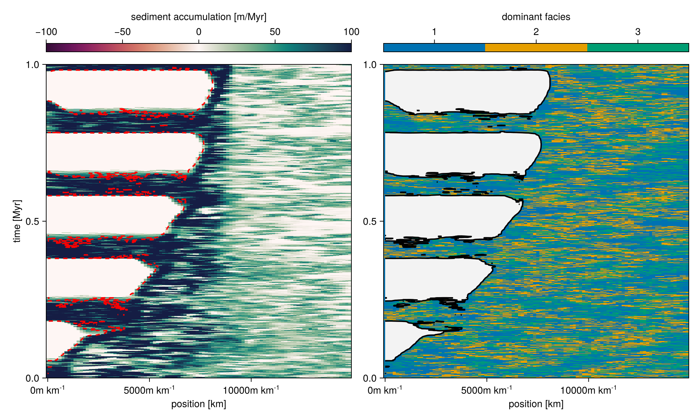
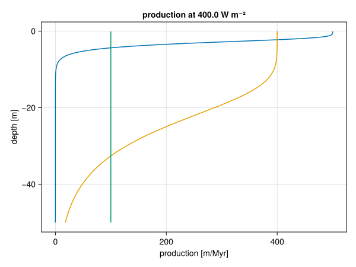
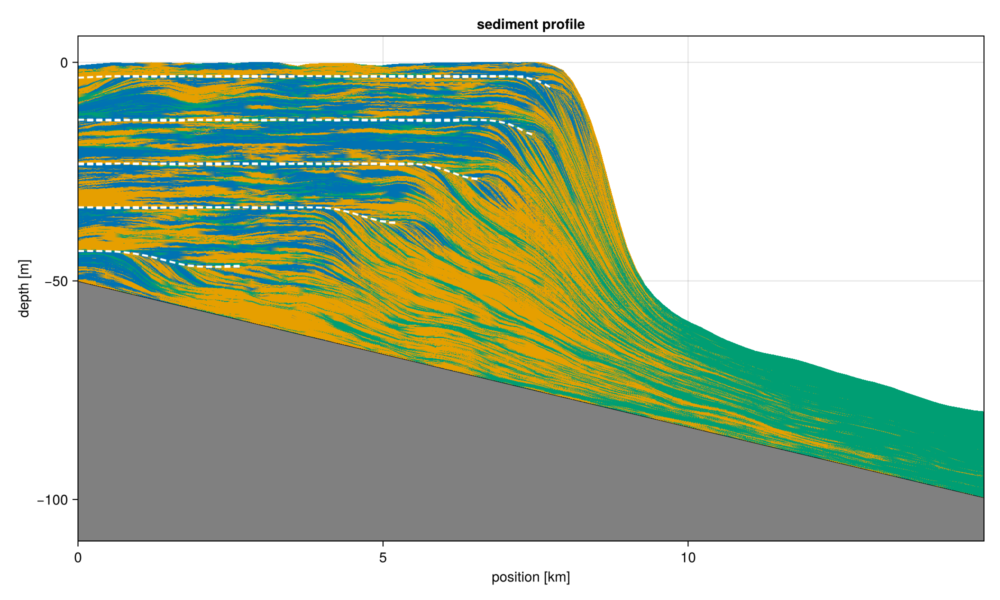
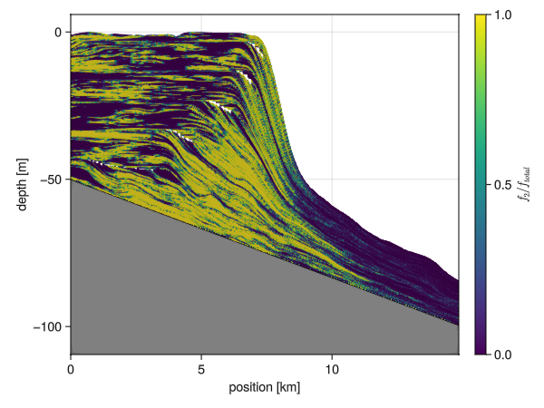
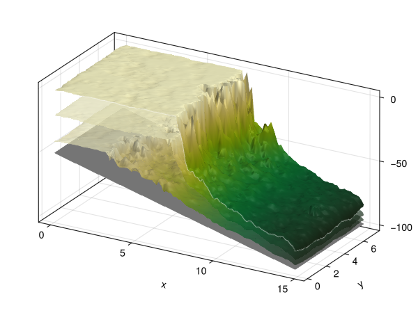

Visualization
The visualization of CarboKitten output is implemented in a Julia package extension. This is done so that CarboKitten.jl itself doesn't have to depend on Makie.jl (our main visualization tool), which has a large transient dependency stack. To make the Visualization extension of CarboKitten available, make sure to activate a Julia project where Makie is installed.
Makie primer
Makie.jl is a visualization package that creates exceptionally good looking (publication quality) plots in both 2D and 3D. There are three back-ends for Makie:
CairoMakiefor publication quality vector graphics, writing toSVG,PDForPNG.GLMakiehas better run-time performance thanCairoMakie, especially when dealing with larger datasets and/or 3D visualizations. However,GLMakiecan only produce rasterized images, soPNG,JPEGor directly to screen for interactive use.WGLMakiefor online publication using WebGL. If you want interactive plots, like 3D plots that you can rotate in the browser, this is the one to use. Fair warning: this is also the least stable back-end for Makie.
To work with Makie, you need to import one of the three back-end packages. In general, every plot available in Makie has two variants. One is a direct function for plotting:
using CairoMakie
x = randn(10)
y = randn(10)
scatter(x, y)The other requires a bit more prep, but gives you more control.
fig = Figure()
ax = Axis(fig[1,1])
scatter!(ax, x, y)Here, we create a figure explicitly, then create a new set of axes somewhere on the grid in the figure, and then plot on that set of axes. The plotting functions accepting an Axis argument actually modify an existing context, which is why these functions always end with an exclamation mark, in this case scatter!.
If you like to know more about Makie, their "Getting started" is a good place to start.
Colours
We like to use colorblind safe pallete of colours as described on Paul Tol's website: '#4477AA', '#EE6677', '#228833', '#CCBB44', '#66CCEE', '#AA3377', '#BBBBBB'.
Project Extension
The Project Extension requires a front-end where the available methods are exposed.
module Visualization
export sediment_profile!, sediment_profile, wheeler_diagram!, wheeler_diagram, production_curve!,
production_curve, glamour_view!, summary_plot
function print_instructions(func_name, args)
println("Called `$(func_name)` with args `$(typeof.(args))`")
println("This is an extension and only becomes available when you import {Cairo,GL,WGL}Makie before using this.")
end
function profile_plot! end
# profile_plot!(args...; kwargs...) = print_instructions("profile_plot!", args)
sediment_profile!(args...) = print_instructions("sediment_profile!", args)
sediment_profile(args...) = print_instructions("sediment_profile", args)
wheeler_diagram!(args...) = print_instructions("wheeler_diagram!", args)
wheeler_diagram(args...) = print_instructions("wheeler_diagram", args)
production_curve(args...) = print_instructions("production_curve", args)
production_curve!(args...) = print_instructions("production_curve!", args)
stratigraphic_column!(args...) = print_instructions("production_curve!", args)
age_depth_model!(args...) = print_instructions("age_depth_model!", args)
glamour_view!(args...) = print_instructions("glamour_view!", args)
summary_plot(args...) = print_instructions("summary_plot", args)
end # modulemodule VisualizationExt
include("WheelerDiagram.jl")
include("ProductionCurve.jl")
include("StratigraphicColumn.jl")
include("AgeDepthModel.jl")
include("SedimentProfile.jl")
include("GlamourView.jl")
include("SummaryPlot.jl")
endSummary collage

module SummaryPlot
using CarboKitten.Visualization
import CarboKitten.Visualization: summary_plot
using CarboKitten.Export: read_header, read_volume, read_slice, group_datasets
using CarboKitten.Utility: in_units_of
using HDF5
using Unitful
using Makie
summary_plot(filename::AbstractString; kwargs...) = h5open(fid->summary_plot(fid; kwargs...), filename, "r")
function summary_plot(fid::HDF5.File; wheeler_smooth=(1, 1), show_unconformities=true)
header = read_header(fid)
data_groups = group_datasets(fid)
if length(data_groups[:slice]) == 0 && length(data_groups[:volume]) == 0
@warn "No volume data or slice data stored. Cannot produce summary view."
return nothing
end
fig = Figure(size=(1200, 1000), backgroundcolor=:gray80)
volume_data = if length(data_groups[:volume]) == 0
@warn "No volume data stored, skipping topographic plots."
nothing
else
if length(data_groups[:volume]) > 1
@warn "Multiple volume data sets, picking first one."
end
volume_data = read_volume(fid[data_groups[:volume][1]])
ax = Axis3(fig[1, 3]; title="topography", zlabel="depth [m]", xlabel="x [km]", ylabel="y [km]")
glamour_view!(ax, header, volume_data)
volume_data
end
section_data = if length(data_groups[:slice]) == 0
@warn "No profile data slice stored, taking section of volume data along x-axis."
y_slice = div(size(volume_data.sediment_thickness)[2], 2) + 1
volume_data[:, y_slice]
else
read_slice(fid[data_groups[:slice][1]])
end
n_facies = size(section_data.production)[1]
ax1 = Axis(fig[1:2,1:2])
sediment_profile!(ax1, header, section_data; show_unconformities = show_unconformities)
axislegend(ax1; merge=true, backgroundcolor=:gray80)
ax2 = Axis(fig[4,1])
ax3 = Axis(fig[4,2])
sm, df = wheeler_diagram!(ax2, ax3, header, section_data; smooth_size=wheeler_smooth)
Colorbar(fig[3,1], sm; vertical=false, label="sedimentation rate [m/Myr]")
Colorbar(fig[3,2], df; vertical=false, label="dominant facies", ticks=1:n_facies)
ax4 = Axis(fig[4,3], title="sealevel curve", xlabel="sealevel [m]",
limits=(nothing, (header.axes.t[1] |> in_units_of(u"Myr"),
header.axes.t[end] |> in_units_of(u"Myr"))))
lines!(ax4, header.sea_level |> in_units_of(u"m"), header.axes.t |> in_units_of(u"Myr"))
ax5 = Axis(fig[2,3])
max_depth = minimum(header.initial_topography)
production_curve!(ax5, fid["input"], max_depth=max_depth)
linkyaxes!(ax2, ax3, ax4)
fig
end
endWheeler diagram

#| creates: docs/src/_fig/wheeler_diagram.png
#| requires: data/output/alcap-example.h5
#| collect: figures
module Script
using CairoMakie
using CarboKitten.Export: read_slice
using CarboKitten.Visualization: wheeler_diagram
function main()
header, data = read_slice("data/output/alcap-example.h5", :, 25)
fig = wheeler_diagram(header, data)
save("docs/src/_fig/wheeler_diagram.png", fig)
end
end
Script.main()module WheelerDiagram
import CarboKitten.Visualization: wheeler_diagram, wheeler_diagram!
using CarboKitten.Export: Header, Data, DataSlice, read_data, read_slice
using CarboKitten.Utility: in_units_of
using Makie
using Unitful
using CarboKitten.BoundaryTrait
using CarboKitten.Stencil: convolution
const na = [CartesianIndex()]
elevation(h::Header, d::DataSlice) =
let bl = h.initial_topography[d.slice..., na],
sr = h.axes.t[end] * h.subsidence_rate
bl .+ d.sediment_thickness .- sr
end
water_depth(header::Header, data::DataSlice) =
let h = elevation(header, data),
s = header.subsidence_rate .* (header.axes.t .- header.axes.t[end]),
l = header.sea_level
h .- (s.+l)[na, :]
end
const Rate = typeof(1.0u"m/Myr")
function sediment_accumulation!(ax::Axis, header::Header, data::DataSlice;
smooth_size::NTuple{2,Int}=(3, 11),
colormap=Reverse(:curl),
range::NTuple{2,Rate}=(-100.0u"m/Myr", 100.0u"m/Myr"))
magnitude = sum(data.deposition .- data.disintegration; dims=1)[1, :, :] ./ (header.Δt * data.write_interval)
blur = convolution(Shelf, ones(Float64, smooth_size...) ./ *(smooth_size...))
wd = zeros(Float64, length(header.axes.x), length(header.axes.t))
blur(water_depth(header, data) / u"m", wd)
mag = zeros(Float64, length(header.axes.x), length(header.axes.t) - 1)
blur(magnitude / u"m/Myr", mag)
ax.ylabel = "time [Myr]"
ax.xlabel = "position [km]"
xkm = header.axes.x |> in_units_of(u"km")
tmyr = header.axes.t |> in_units_of(u"Myr")
sa = heatmap!(ax, xkm, tmyr, mag;
colormap=colormap, colorrange=range ./ u"m/Myr")
#contour!(ax, xkm, tmyr, wd;
# levels=[0], color=:red, linewidth=2, linestyle=:dash)
return sa
end
function dominant_facies!(ax::Axis, header::Header, data::DataSlice;
smooth_size::NTuple{2,Int}=(3, 11),
colors=Makie.wong_colors())
n_facies = size(data.production)[1]
colormax(d) = getindex.(argmax(d; dims=1)[1, :, :], 1)
dominant_facies = colormax(data.deposition)
blur = convolution(Shelf, ones(Float64, smooth_size...) ./ *(smooth_size...))
wd = zeros(Float64, length(header.axes.x), length(header.axes.t))
blur(water_depth(header, data) / u"m", wd)
ax.ylabel = "time [Myr]"
ax.xlabel = "position [km]"
xkm = header.axes.x |> in_units_of(u"km")
tmyr = header.axes.t |> in_units_of(u"Myr")
ft = heatmap!(ax, xkm, tmyr, dominant_facies;
colormap=cgrad(colors[1:n_facies], n_facies, categorical=true),
colorrange=(0.5, n_facies + 0.5))
contourf!(ax, xkm, tmyr, wd;
levels=[0.0, 10000.0], colormap=Reverse(:grays))
#contour!(ax, xkm, tmyr, wd;
# levels=[0], color=:black, linewidth=2)
return ft
end
function wheeler_diagram!(ax1::Axis, ax2::Axis, header::Header, data::DataSlice;
smooth_size::NTuple{2,Int}=(3, 11),
range::NTuple{2,Rate}=(-100.0u"m/Myr", 100.0u"m/Myr"))
linkyaxes!(ax1, ax2)
sa = sediment_accumulation!(ax1, header, data; smooth_size=smooth_size, range=range)
ft = dominant_facies!(ax2, header, data; smooth_size=smooth_size)
ax2.ylabel = ""
return sa, ft
end
function wheeler_diagram(header::Header, data::DataSlice;
smooth_size::NTuple{2,Int}=(3, 11),
range::NTuple{2,Rate}=(-100.0u"m/Myr", 100.0u"m/Myr"))
fig = Figure(size=(1000, 600))
ax1 = Axis(fig[2, 1])
ax2 = Axis(fig[2, 2])
sa, ft = wheeler_diagram!(ax1, ax2, header, data; smooth_size=smooth_size, range=range)
Colorbar(fig[1, 1], sa; vertical=false, label="sediment accumulation [m/Myr]")
Colorbar(fig[1, 2], ft; vertical=false, ticks=1:3, label="dominant facies")
fig
end
endProduction curve

#| creates: docs/src/_fig/production_curve.svg
#| requires: data/output/alcap-example.h5
#| collect: figures
using CairoMakie
using CarboKitten.Visualization: production_curve
save("docs/src/_fig/production_curve.svg", production_curve("data/output/alcap-example.h5"))module ProductionCurve
using Makie
using Unitful
using HDF5
import CarboKitten.Components.Common: AbstractInput
import CarboKitten.Visualization: production_curve!, production_curve
using CarboKitten.Components.Production: Facies, production_rate
function production_curve!(ax, input::I) where I <: AbstractInput
ax.title = "production at $(sprint(show, input.insolation; context=:fancy_exponent=>true))"
ax.xlabel = "production [m/Myr]"
ax.ylabel = "depth [m]"
ax.yreversed = true
for f in input.facies
depth = (0.1:0.1:50.0)u"m"
prod = [production_rate(input.insolation, f, d) for d in depth]
lines!(ax, prod / u"m/Myr", depth / u"m")
end
end
function production_curve(input::I) where I <: AbstractInput
fig = Figure()
ax = Axis(fig[1, 1])
production_curve!(ax, input)
fig
end
function production_curve(filename::AbstractString)
h5open(filename, "r") do fid
fig = Figure()
ax = Axis(fig[1, 1])
production_curve!(ax, fid["input"])
fig
end
end
function production_curve!(ax, g::HDF5.Group; max_depth=-50.0u"m")
a = HDF5.attributes(g)
insolation = 400.0u"W/m^2" # a["insolation"][] * u"W/m^2"
ax.title = "production at $(sprint(show, insolation; context=:fancy_exponent=>true))"
ax.xlabel = "production [m/Myr]"
ax.ylabel = "depth [m]"
for i in 1:a["n_facies"][]
fa = HDF5.attributes(g["facies$(i)"])
f = Facies(
maximum_growth_rate = fa["maximum_growth_rate"][] * u"m/Myr",
extinction_coefficient = fa["extinction_coefficient"][] * u"m^-1",
saturation_intensity = fa["saturation_intensity"][] * u"W/m^2")
depth = (0.1u"m":0.1u"m":-max_depth)
prod = [production_rate(insolation, f, d) for d in depth]
lines!(ax, prod / u"m/Myr", - depth / u"m")
end
end
endSediment profile

The sediment profile is probably the most important visualization that we provide. By default it allows us to study the sediment composition of a section, by plotting the argmax of the deposition. In cases where significant amounts of sediment is eroded, all deposition is plotted, and it is assumed that newest depositions are shown on top of possible older ones.
#| creates: docs/src/_fig/sediment_profile.png
#| requires: data/output/alcap-example.h5
#| collect: figures
module Script
using CairoMakie
using CarboKitten.Export: read_slice
using CarboKitten.Visualization: sediment_profile
function main()
save("docs/src/_fig/sediment_profile.png",
sediment_profile(read_slice("data/output/alcap-example.h5", :slice)...))
end
end
Script.main()If you want to visualize something other than the argmax of the deposition, you may use the profile_plot! function. For example, we can plot the fraction of second facies over total.

#| creates: docs/src/_fig/profile_fraction.png
#| requires: data/output/alcap-example.h5
#| collect: figures
module Script
using GLMakie
using CarboKitten.Export: read_slice
using CarboKitten.Visualization: profile_plot!
function main()
(header, slice) = read_slice("data/output/alcap-example.h5", :profile)
fig = Figure()
ax = Axis(fig[1, 1])
x = header.axes.x
t = header.axes.t
plot = profile_plot!(x -> x[2]/sum(x), ax, header, slice; colorrange=(0, 1))
Colorbar(fig[1, 2], plot; label=L"f_2 / f_{total}")
save("docs/src/_fig/profile_fraction.png", fig)
fig
end
end
Script.main()Implementation
module SedimentProfile
import CarboKitten.Visualization: sediment_profile, sediment_profile!, profile_plot!
using CarboKitten.Visualization
using CarboKitten.Utility: in_units_of
using CarboKitten.Export: Header, Data, DataSlice, read_data, read_slice
using CarboKitten.Skeleton: skeleton
using Makie
using GeometryBasics
using Unitful
using Statistics: mean
const Rate = typeof(1.0u"m/Myr")
const Amount = typeof(1.0u"m")
const Length = typeof(1.0u"m")
const Time = typeof(1.0u"Myr")
const na = [CartesianIndex()]
elevation(h::Header, d::Data) =
let bl = h.initial_topography[:, :, na],
sr = h.axes.t[end] * h.subsidence_rate
bl .+ d.sediment_thickness .- sr
end
elevation(h::Header, d::DataSlice) =
let bl = h.initial_topography[d.slice..., na],
sr = h.axes.t[end] * h.subsidence_rate
bl .+ d.sediment_thickness .- sr
end
"""
explode_quad_vertices(v)
Takes a three dimensional array representing a grid of vertices. This function duplicates these
vertices in the vertical direction, so that an amount of sediment can be given a single color.
Returns a tuple of vertices and faces (triangles), suitable for plotting with Makie's `mesh`
function.
"""
function explode_quad_vertices(v::Array{Float64,3})
w, h, d = size(v)
points = zeros(Float64, w, h - 1, 2, d)
n_vertices = 2 * w * (h - 1)
n_quads = (w - 1) * (h - 1)
@views points[:, :, 1, :] = v[1:end, 1:end-1, :]
@views points[:, :, 2, :] = v[1:end, 2:end, :]
idx = reshape(1:n_vertices, w, (h - 1), 2)
vtx1 = reshape(idx[1:end-1, :, 1], n_quads)
vtx2 = reshape(idx[2:end, :, 1], n_quads)
vtx3 = reshape(idx[2:end, :, 2], n_quads)
vtx4 = reshape(idx[1:end-1, :, 2], n_quads)
return reshape(points, n_vertices, d),
vcat(hcat(vtx1, vtx2, vtx3), hcat(vtx1, vtx3, vtx4))
end
"""
plot_unconformities(ax, header, data_slice, minwidth; kwargs...)
plot_unconformities(ax, header, data_slice, minwidth::Bool; kwargs...)
plot_unconformities(ax, header, data_slice, minwidth::Int; kwargs...)
Scans the given `data_slice` for unconformities, and plots those using
Makie `linesegments`. The `minwidth` argument controls for how many time
steps the platform needs to be exposed before we plot it. For `minwidth = true`
the default width of 10 time steps is taken.
Additional keyword arguments are forwarded to the `linesegments!` call.
"""
function plot_unconformities(ax::Axis, header::Header, data::DataSlice, minwidth::Nothing; kwargs...)
@info "Not plotting unconformities, got minwidth: $(minwidth)"
end
function plot_unconformities(ax::Axis, header::Header, data::DataSlice, minwidth::Bool; kwargs...)
if minwidth
plot_unconformities(ax, header, data, 10; kwargs...)
end
end
function plot_unconformities(ax::Axis, header::Header, data::DataSlice, minwidth::Int; kwargs...)
x = header.axes.x |> in_units_of(u"km")
ξ = elevation(header, data) # |> in_units_of(u"m")
water_depth = ξ .- (header.subsidence_rate .* (header.axes.t .- header.axes.t[end]) .+ header.sea_level)[na, :]
hiatus = skeleton(water_depth .> 0.0u"m", minwidth=minwidth)
if !isempty(hiatus[1])
verts = [(x[pt[1]], ξ[pt...] |> in_units_of(u"m")) for pt in hiatus[1]]
linesegments!(ax, vec(permutedims(verts[hiatus[2]])); kwargs...)
end
end
"""
profile_plot!(ax, header, data_slice; mesh_args...)
Generic profile plot. This sets up a mesh for plotting with the Makie `mesh!`
function, plots the initial topography and the mesh by passing `mesh_args...`.
The `color` array should have the same size as a single facies for `data.production`.
"""
function profile_plot!(ax::Axis, header::Header, data::DataSlice; color::AbstractArray, mesh_args...)
x = header.axes.x |> in_units_of(u"km")
t = header.axes.t |> in_units_of(u"Myr")
n_facies, n_x, n_t = size(data.production)
ξ = elevation(header, data) # |> in_units_of(u"m")
verts = zeros(Float64, n_x, n_t+1, 2)
@views verts[:, :, 1] .= x
@views verts[:, :, 2] .= ξ |> in_units_of(u"m")
v, f = explode_quad_vertices(verts)
total_subsidence = header.subsidence_rate * header.axes.t[end]
bedrock = (header.initial_topography[data.slice...] .- total_subsidence) |> in_units_of(u"m")
lower_limit = minimum(bedrock) - 20
band!(ax, x, lower_limit, bedrock; color=:gray, label="initial topography")
lines!(ax, x, bedrock; color=:black, label="initial topography")
ylims!(ax, lower_limit + 10, nothing)
xlims!(ax, x[1], x[end])
ax.xlabel = "position [km]"
ax.ylabel = "depth [m]"
c = reshape(color, n_x * n_t)
mesh!(ax, v, f; color=vcat(c, c), mesh_args...)
end
"""
profile_plot!(f, ax, header, data_slice; mesh_args...)
Instead of explicitely passing the color data as an array, this generates the
colors from a function `f` over the deposition data. So `f` should have signature
`AbstractVector -> Float` or possibly `AbstractVector -> RGB` (whatever Makie accepts).
Here the vector input has size of the number of facies.
"""
function profile_plot!(f::F, ax::Axis, header::Header, data::DataSlice; mesh_args...) where {F}
color = f.(eachslice(data.deposition, dims=(2, 3)))
profile_plot!(ax, header, data; color=color, mesh_args...)
end
"""
sediment_profile!(ax, header, data; show_unconformities)
Plot the sediment profile, choosing colour by dominant facies type (argmax). Unconformaties
are shown when the sediment is subaerially exposed (even if sediment is still deposited
due to a set intertidal zone).
"""
function sediment_profile!(ax::Axis, header::Header, data::DataSlice; show_unconformities::Union{Nothing,Bool,Int} = true)
x = header.axes.x |> in_units_of(u"km")
t = header.axes.t |> in_units_of(u"Myr")
n_facies = size(data.production)[1]
plot = profile_plot!(argmax, ax, header, data; alpha=1.0,
colormap=cgrad(Makie.wong_colors()[1:n_facies], n_facies, categorical=true))
minwidth = show_unconformities
plot_unconformities(ax, header, data, minwidth; label = "unconformities",
color=:white, linestyle=:dash, linewidth=1)
ax.title = "sediment profile"
return plot
end
"""
sediment_profile(header, data_slice; show_unconformities=true)
Plot the sediment profile from `data_slice`. This takes the deposited sediments and
find the dominant facies at every point. By default unconformities are shown using
dashed white lines. If this generates too much visual noise, you can increase the
treshold (default 10).
"""
function sediment_profile(header::Header, data_slice::DataSlice; show_unconformities::Union{Bool,Int,Nothing} = true)
fig = Figure(size=(1000, 600))
ax = Axis(fig[1, 1])
sediment_profile!(ax, header, data_slice; show_unconformities = show_unconformities)
return fig
end
end # moduleStratigraphic Column
module StratigraphicColumn
using Makie
using Unitful
import CarboKitten.Visualization: stratigraphic_column!
using CarboKitten.Export: Header, DataColumn, stratigraphic_column, age_depth_model
function scdata(header::Header, data::DataColumn)
n_facies = size(data.production)[1]
n_times = length(header.axes.t) - 1
sc = zeros(Float64, n_facies, n_times)
for f = 1:n_facies
sc[f, :] = stratigraphic_column(header, data, f) / u"m"
end
colormax(d) = getindex.(argmax(d; dims=1)[1, :], 1)
adm = age_depth_model(data.sediment_thickness)
return (ys_low=adm[1:end-1] / u"m", ys_high=adm[2:end] / u"m", facies=colormax(sc)[1:end])
end
function stratigraphic_column!(ax::Axis, header::Header, data::DataColumn; color=Makie.wong_colors())
(ys_low, ys_high, facies) = scdata(header, data)
hspan!(ax, ys_low, ys_high; color=color[facies])
end
function stratigraphic_column!(ax::Axis, header::Header, data::Observable{DataColumn}; color=Makie.wong_colors())
_scdata = lift(d -> scdata(header, d), data)
_ys_low = lift(d -> d.ys_low, _scdata)
_ys_high = lift(d -> d.ys_high, _scdata)
_color = lift(d -> color[d.facies], _scdata)
hspan!(ax, _ys_low, _ys_high; color=_color)
end
endSkeleton
module Skeleton
using .Iterators: filter, map as imap, product, flatten, drop
using ..Utility: enumerate_seq, find_ranges
const Vertex = Tuple{Int, UnitRange{Int}}
pairs(it) = zip(it, drop(it, 1))
edge(a::Vertex, b::Vertex) = isempty(a[2] ∩ b[2]) ? nothing : (a[1], b[1])
edges_between(a, b) = filter(!isnothing, imap(splat(edge), product(a, b)))
middle(a::UnitRange{Int}) = (a.start + a.stop) ÷ 2
"""
skeleton(bitmap::AbstractMatrix{Bool})
Computes the skeleton of a bitmap, i.e. reduces features with some thickness to
a set of line segments. This function is designed with stratigraphic application
in mind: we scan each row in the bitmap for connected regions, then link neighbouring
regions when they overlap. The result is a graph that represents hiatus in the sediment
accumulation.
Returns a tuple of `vertices` and `edges`, where `vertices` is a vector of 2-tuples and
`edges` is a nx2 matrix of indices into the `vertices`.
"""
function skeleton(bitmap::AbstractMatrix{Bool}; minwidth=10)
vertex_rows = (filter(r->length(r)>=minwidth, find_ranges(row)) for row in eachrow(bitmap))
edges::Vector{Tuple{Int,Int}} = collect(flatten(map(splat(edges_between), pairs(enumerate_seq(vertex_rows)))))
vertices::Vector{Tuple{Int,Int}} = collect(flatten(((i, middle(v)) for v in vs) for (i, vs) in enumerate(vertex_rows)))
return vertices, reshape(reinterpret(Int, edges), (2,:))'
end
endGlamour View (3D)
Not very useful but highly glamourous.

#| creates: docs/src/_fig/glamour_view.png
#| requires: data/output/cap1.h5
#| collect: figures
module Script
using CairoMakie
using CarboKitten.Visualization: glamour_view!
using HDF5
function main()
fig = Figure()
ax = Axis3(fig[1,1])
h5open("data/output/cap1.h5", "r") do fid
glamour_view!(ax, fid)
end
save("docs/src/_fig/glamour_view.png", fig)
end
end
Script.main()module GlamourView
import CarboKitten.Visualization: glamour_view!
using CarboKitten.Utility: in_units_of
using CarboKitten.Export: Header, DataVolume
using Makie
using HDF5
using Unitful
function glamour_view!(ax::Makie.Axis3, header::Header, data::DataVolume; colormap=Reverse(:speed))
x = header.axes.x[data.slice[1]] |> in_units_of(u"km")
y = header.axes.y[data.slice[2]] |> in_units_of(u"km")
xy_aspect = x[end] / y[end]
ax.aspect = (xy_aspect, 1, 1)
ax.azimuth = -π/3
n_steps = size(data.sediment_thickness)[3]
grid_size = (length(x), length(y))
steps_between = 2
selected_steps = [1, ((1:steps_between) .* n_steps .÷ (steps_between + 1))..., n_steps]
bedrock = header.initial_topography .- header.axes.t[end] * header.subsidence_rate
result = Array{Float64, 3}(undef, grid_size..., length(selected_steps))
for (i, j) in enumerate(selected_steps)
result[:, :, i] = (data.sediment_thickness[:,:,j] .+ bedrock) |> in_units_of(u"m")
end
surface!(ax, x, y, result[:,:,1];
color=ones(grid_size),
colormap=:grays)
for s in eachslice(result[:,:,2:end-1], dims=3)
surface!(ax, x, y, s;
colormap=(colormap, 0.7))
end
surface!(ax, x, y, result[:,:,end];
colormap=colormap)
lines!(ax, x, zeros(grid_size[1]), result[:, 1, end]; color=(:white, 0.5), linewidth=1)
lines!(ax, fill(x[end], grid_size[2]), y, result[end, :, end]; color=(:white, 0.5), linewidth=1)
end
function glamour_view(header::Header, data::DataVolume; colormap=Reverse(:speed))
fig = Figure()
ax = Axis3(fig[1, 1])
glamour_view!(ax, header, data, colormap=colormap)
return fig, ax
end
endAge-depth Model
module AgeDepthModel
using Makie
using Unitful
using CarboKitten.Visualization
using CarboKitten.Export
end